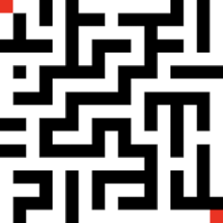
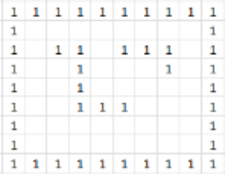

Write an application that applies both DFS and BFS algorithms to find paths between two points in a maze.
Your application needs to take the following specific steps:
-
Generate a random size 2D maze.
-
Pick two random points on the maze as start and finish points.
-
Use Depth First Search algorithm to find a path from the start to fish points.
-
Use Breadth First Search algorithm to find a shortest path from the start to fish points.
Draw (print) the found paths.
-
Application should also respond correctly if there is no path between the end points.
-
For example:

Helpful Notes:
-
Use a parallel 2D array of Booleans to keep track of the visited cells.
-
Use a class similar to Java API java.awt.Point to represent a point on the maze.
Alternatively, write your own point (cell) class.
-
As you are performing the breadth-first search via queue,
keep track of the visitation distance of each cell that you visit in a parallel 2D array of integers.
You can use this array to trace your path back to start from the finish point.
-
Maze density is between 0 (no blocked cells at all) and 1 (complete blockage of all cells).
Use a density that provides viable mazes.
-
Optionally, place blocked cells on the exterior walls of your maze to help you stay
inside the maze.
-
For example:
